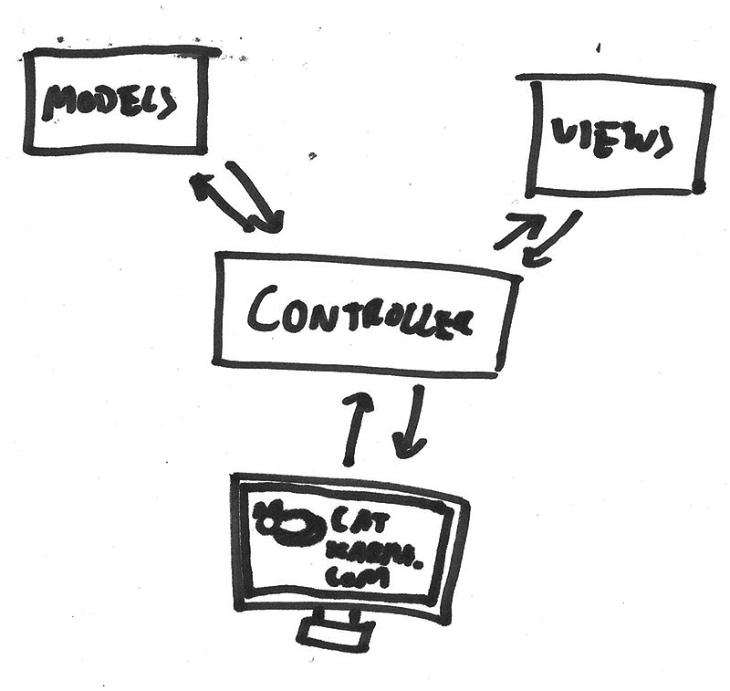
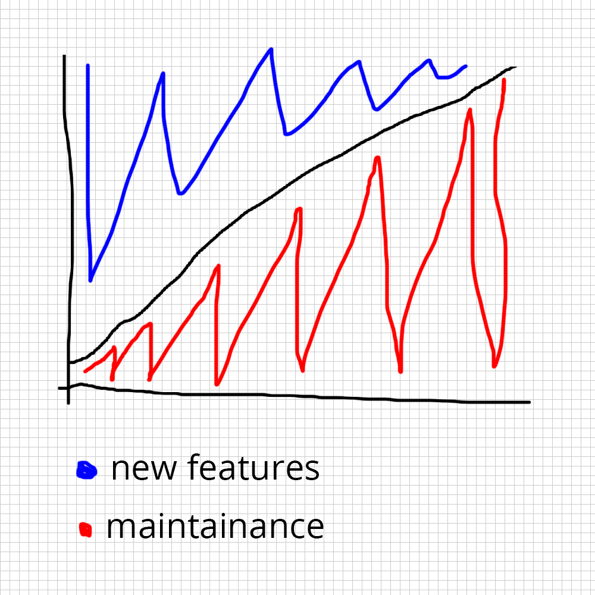
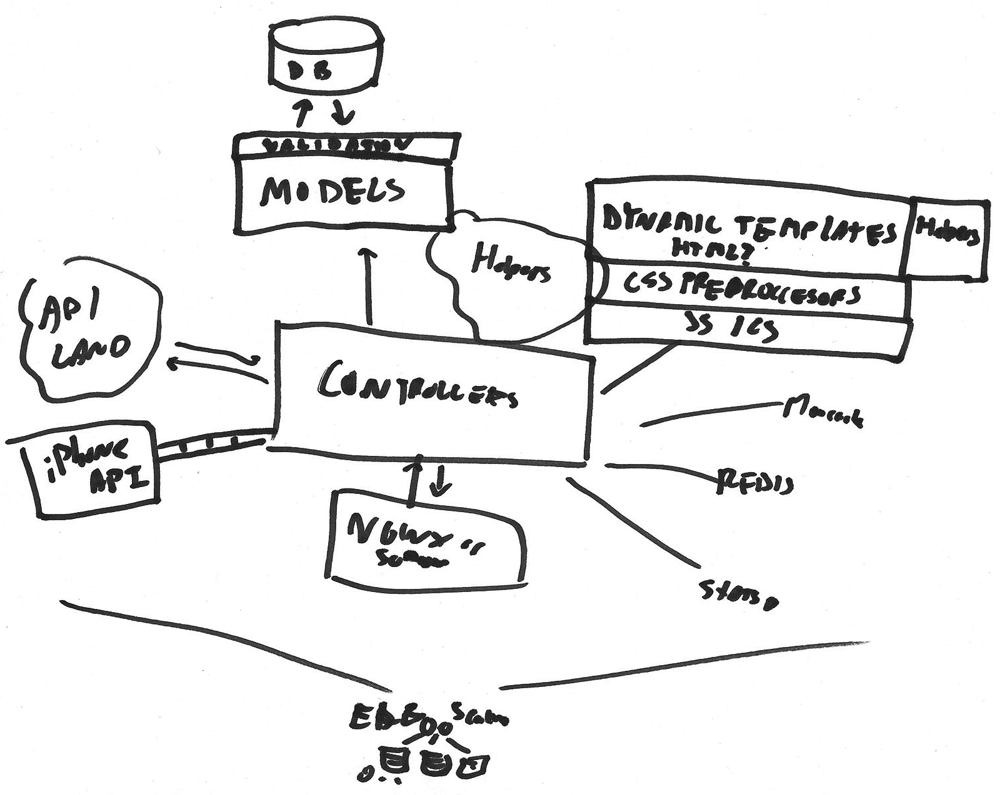
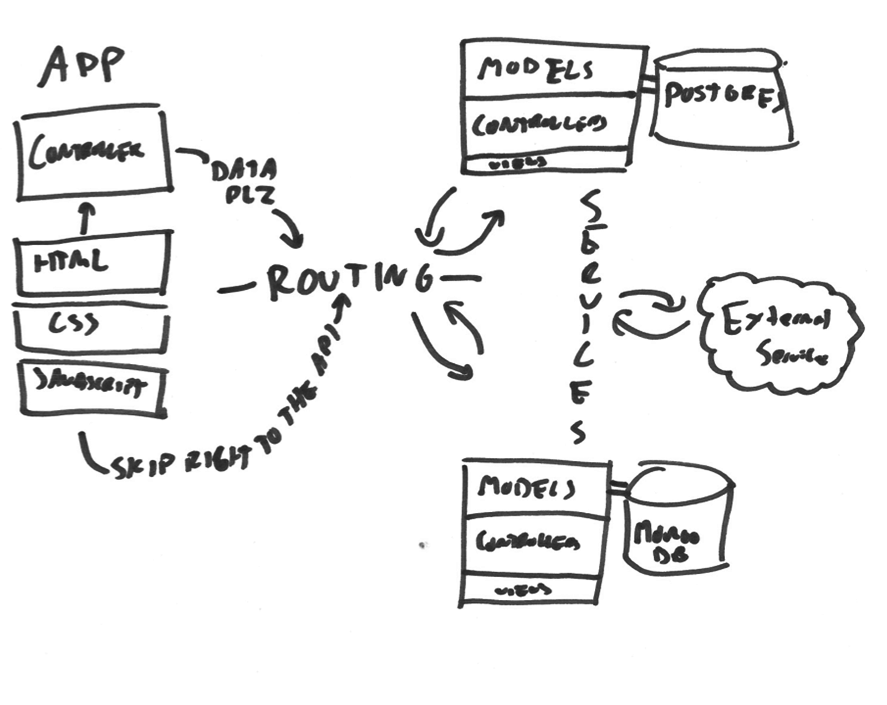

Dismantling the Monorail
Jack Lawson (@ajacksified)
Goals
In the Beginning
A Team Builds An App
Priority #1
Rapid Iteration
Fast Feature Development
Simple Conceptual Model
Single MVC Application
Layers Are Great
That's not sarcasm

Keep It All In Your Head
It's Easy
for example
rails new catkarma
or
express --sessions --hogan catkarma
then
cd catkarma
git init
git add .
git commit -m 'Intial'
heroku create
git push heroku master
Later On
Shifting Priorities
catkarma a riotious success
Time is Your Enemy
Chaos and Entropy
Growing Introduces Complexity
Higher Communication Overhead
Meetings, Standups, & Coordination

Big Problems if Test Suite is Lacking
Upgrading Becomes Hard
Raise your hand if you've ever put off a Rails 3.2 Upgrade
One-offs and Duplicated Code
To Solve Performance
Throw more server instances up
To Maintain Speed
Take Shortcuts

Complex And Full of Hacks
:(
You May Ask Yourself
How Did I Get Here?
"We Will Rebuild It When We Get Time"
Right? ...soon?
Dismantling the Monorail
Prioritize Long-Term Efficiency
A Different Conceptual Model
It's Still Simple
Services
Not a Particularly New Idea
You're likely familiar with "the internet", a distributed system
Discrete Systems Lead to Specializing
Specializing Leads To Efficiency

Abstracted Logic Leads To Flexibility
Using the Right Tool for the Job
Best Framework for Application Logic
Best Framework for UX
Best Database for Persistence
These Are Almost Never the Same Answer
Reusable APIs
Implement Android, iOS, Google Glasses,
Kindles, Game Consoles,
Raspberry Pis, Desktops, Laptops,
e-paper Wristwatches, 3-D Printers,
Chatbots, Console Scripts, public APIs...
With No Special Code
Provided You Use
Common Protocols
Like RESTful JSON
Additional Complexity Opportunity
Partial Failure
Means The Entire Application Isn't Unavailable
Multiple Systems at Once
Highlights Communication Inefficiencies
More Complex Ops
Allows Scaling Specific Services
Shared Assets
Bundle Reusable Libraries
Fast Iterations
Which Is What We Wanted Anyway
Less Overhead
More Efficiently Used Servers and Developer Time
Less Frustration
Stop Digging Through SQL Injected In View Helpers
Proof
Amazon, Netflix, many others
Getting There
Few People Are Starting from Nothing
Separate Logic into Libraries
Move Business Logic into NPM pacakages, Gems, JARs, what-have-you
Draw the Line Between Models
Eliminate Inter-model Communication
Separate Libraries into Servers
Define an interface (like JSON over REST)
Delete Your Old Monolithic Repository